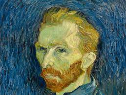
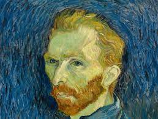

Zehra Dinç, 2003 yılında Hatay’da doğdu. İlk ve orta öğrenimini Hatay’da tamamladı. 2017-2021 yılları arasında Hatay Bedii Sabuncu Güzel Sanatlar Lisesi’nde Resim Bölümü eğitimini tamamladı. Ardından 2021-2025 yılları arasında Hatay Mustafa Kemal Üniversitesi Güzel Sanatlar Fakültesi Resim Bölümünden dereceyle mezun oldu.
Yurt içinde ödüller kazanarak çeşitli sergilere dahil oldu. Bunun yanında Contemporary İstanbul Vakfı ‘Sanat Kariyeri ve Mesleki Gelişim Kursu’ kısa dönem proje asistanı olarak görev aldı.
Üretimlerinde “Benlik” ve “Benlik Kaygısı” kavramlarını incelerken, bireyin iç dünyasına, psikolojik katmanlarına ve yansıma üzerinden oluşan algısal kırılmalara odaklanır.
Zehra Dinç, 2003 yılında Hatay’da doğdu. İlk ve orta öğrenimini Hatay’da tamamladı. 2017-2021 yılları arasında Hatay Bedii Sabuncu Güzel Sanatlar Lisesi’nde Resim Bölümü eğitimini tamamladı. Ardından 2021-2025 yılları arasında Hatay Mustafa Kemal Üniversitesi Güzel Sanatlar Fakültesi Resim Bölümünden dereceyle mezun oldu.
Yurt içinde ödüller kazanarak çeşitli sergilere dahil oldu. Bunun yanında Contemporary İstanbul Vakfı ‘Sanat Kariyeri ve Mesleki Gelişim Kursu’ kısa dönem proje asistanı olarak görev aldı.
Üretimlerinde “Benlik” ve “Benlik Kaygısı” kavramlarını incelerken, bireyin iç dünyasına, psikolojik katmanlarına ve yansıma üzerinden oluşan algısal kırılmalara odaklanır.

Sergiler
- 2025 World Art Dubai
- 2025 Art Ankara 11th International Contemporary Art Fair
- 2024 Mersin Contemporary Art Fair
- 2024 Art Ankara 10th International Contemporary Art Fair
- 2024 IAAF İzmir Art&Antique Fair
- 2023 Art Contact İstanbul 3rd. International Contemporary Art Fair
Çalışmalar
1. Çalışma

2. Çalışmas
 
